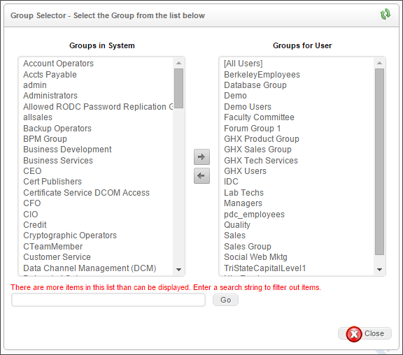
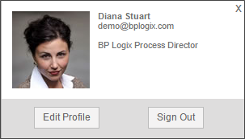
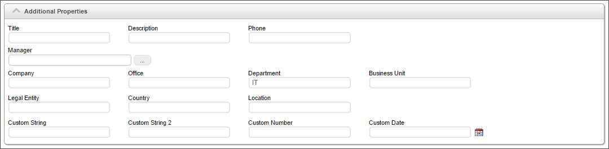

You can manage users and groups remotely through the web-based Administration Section. You can access this section by navigating to the User Administration tab of the Administration section.
Process Director organizes users in the database as follows:
+ partitions
+ users
+ groups
+ users
Users or groups can be members of partitions. Users can also belong to multiple groups, allowing for role based administration.
The following User IDs will be created on a new Process Director installation. These users have no passwords and have been given full permission to all objects.
The following group is created on a new Process Director installation. The user named Administrator is a member of this group.
Users may fall into one of two primary classes:
Cloud users that are licensed for any day passes should pre-load/configure all named users who may consume day passes, prior to their use. All that's required is the UserID, authentication mechanism(such as SAML or built-in login, and the license type. This list of temporary users can be entered annually, or loaded using the Excel import feature in the User Administration page. If you use a self-provisioning for new users, then the self-provisioned user will consume day passes unless their user record is updated manually by the administrator. Setting the DefaultNewUsersToDayPass custom variable will force all new users to be added as day pass users.
This section describes how to add users to Process Director using the built-in authentication. This is not required for users that are authenticated by Windows, your LDAP server or an external authentication system. For built-in users, a User ID and password must be added to the Process Director database before a login can occur. When a user is configured in the Process Director database, additional information such as the user’s email address and alias can be configured.
On the User Page of the
This will add a new user to the Users list.

Enter the user’s User ID and Password. You can force the user to change his password upon login. Click OK when done. After you create the user, you can click on the “Edit” link next to the user’s name and configure it further.
The User ID will also serve as the user’s login user name for Process Director. BP Logix highly recommends that administrators ensure that User ID’s are unique to each user. This may not be possible, however, when using SAML authentication for existing users where duplicate user names exist. In this case the SAML authentication must send a unique GUID or identifier for the users. There is a variable in the custom vars file called fAuthSAMLAllowDuplicateUserIDs that must be set to “true” to allow this behavior.
 In many cases, Process Director will return a comma-separated list of users. Since the users are identified by UserName, we strongly recommend that your users names do not include commas as part of the user name.
In many cases, Process Director will return a comma-separated list of users. Since the users are identified by UserName, we strongly recommend that your users names do not include commas as part of the user name.

To set the user’s account properties, click on the Edit hotlink in the user's row of the user list. The Edit User configuration will display, with the User ID and Password fields already configured. you may configure the remaining user properties.
Enter an email address that will be associated with the user in the Email Address field. You can change the password by checking the Change Password box; an input field will appear prompting for a new password. Click OK to save the configuration.
Additional check boxes enable you to configure the following settings:
| SETTING |
DESCRIPTION |
|---|---|
| User Disabled | Disables the user account, preventing the user from participating in any tasks, and deleting the user's participation from any existing tasks. |
| Disable Emails for this User | Prevents Process Director emails from being sent to the user. |
| User Account Locked | Locks the account, preventing the user from logging in. (This feature is implemented only for “built-in” user account authentication. It does not apply to LDAP, SAML, or Windows user accounts.) |
| Force password change at next login | Force the user to change their password on the next login attempt. |
| Change Password | When checked, a text box will appear that enables you to enter a new password for the user. |
| Mobile App User | This setting appears only for installations that are licensed for the Mobile Application Component, with the appropriate mobile app custom variables configured properly. Checking this property indicates that the user will be granted access to the Mobile Application. |
| Mobile Admin User | This setting appears only for installations that are licensed for the Mobile Application Component, with the appropriate mobile app custom variables configured properly. Checking this property indicates that the user will be granted access to the Mobile Server as an administrator. |
If Mobile App User or Mobile Admin User are checked, the users will automatically be imported into the Mobile Application server as users with the appropriate levels of access. Only Mobile Admin Users can access the administrative UI of the mobile server, and only Mobile App Users will be granted access to the Mobile Application on their mobile device. A user who is both an app and admin user will need to have both properties checked.
This page allows you to grant the user different types of administrative privileges. You can grant users the following privileges by checking off the corresponding checkboxes:
| ADMIN TYPE |
DESCRIPTION |
|---|---|
| System Administrator | The top-level Administrative user, with complete control of the Process Director Installation |
| System Partition Admin | This user type is not technically a system administrator, and has no access to the IT Admin section of the installation. Users who are designated as system partition administrators, however, have full access to the Content List for the partitions to which they are a member, and have permission to create, edit, and delete all content list objects, irrespective of the Content List permissions that have been set in that Partition. |
| System Configuration Admin | A subset of the System Administrator user with access only to the Configuration tab. |
| System User Admin | A subset of the System Administrator user, with access only to the User Administration tab. |
| System Install Admin | A subset of the System Administrator user, with access only to the Installation Settings tab. |
| System Troubleshooting Admin | A subset of the System Administrator user, with access only to the Troubleshooting tab. |
| User Impersonation Ability | The ability for this user to impersonate other users. |
You can assign the user to Process Director user groups by clicking the Assign Groups button. When you click the button, the Group Selector will open.

From the list box on the left, select the user group(s) to which you'd like to assign the user, then click the button, which will move the group names over to the list box on the left.
To remove the user from a group, select the group from the list box on the left, then click the button to remove the group.
 When adding users to a group, the fStartUsersAddedToGroup custom variable determines whether the new user will be assigned to any running tasks that are assigned to that group.
When adding users to a group, the fStartUsersAddedToGroup custom variable determines whether the new user will be assigned to any running tasks that are assigned to that group.
This dropdown control enables you to select the user's Time Zone. You can also allow Process Director to set the time zone to Daylight savings time automatically, by checking the Auto DST check box.
You can set the appropriate language for the user, or select the default system language, by choosing it from this dropdown. The use of languages other than English will require that Process Director be localized for each additional language.
A picture of each user can be uploaded to Process Director. The image will appear in the user information box for each user.

You may upload the image by clicking on the Browse button to find and select the image. Once the image is selected, clicking the Upload button will upload the signature image to Process Director. Acceptable image formats include GIF, JPG, and PNG images.
Process Director can imprint an electronic signature in all routing slips for a user. If you have an image of the user's signature, you may upload the image by clicking on the Browse button to find and select the image. Once the image is selected, clicking the Upload button will upload the signature image to Process Director. Acceptable image formats include GIF, JPG, and PNG images.
This user picker enables you to delegate another user to perform this user's tasks. For more information on user delegation, please see the User Delegation topic.
This user picker enables you to replace the current user with a selected user. This is not a delegation. Instead, the current user will be completely replaced by the selected user in all assigned tasks, e.g., any task where the replaced user is specifically identified as the task assignee.
This replacement function will not replace the original user in any historical data, however, so an original user who was the timeline/workflow initiator will still be listed as the initiator. Similarly, if the original user is assigned a task via a user picker on a Form field, or from a Business Rule, the Replace user function will NOT replace the original user in those objects, either. For these reasons, we recommend that you immediately disable the account for the original user. When you do so, this will likely result in future tasks with assignments made via Form or Business Rule going into an error state when the original user is assigned if the Form or Business Rule is not also edited when the original user is replaced.
The Replace User function is not a panacea for user replacement. All it can do is try to make replacing a user easier than it would otherwise be.
For User of Process Director v3.78 and higher, additional properties can be set for users. The Additional Properties section contains a number of text boxes to set these properties.

| PROPERTY |
DESCRIPTION |
|---|---|
| Title | A text box for the user's Title. |
| Description | A text box for a Description. |
| Phone | A text box for the user's phone number. |
| Manager | A UserPicker to choose the user's Manager. |
| Company | A text box for the user's Company. |
| Office | A text box for the user's Office name. |
| Department | A text box for the user's Department. |
| Business Unit | A text box for the user's Business Unit. |
| Legal Entity | A text box for the user's Business Entity. |
| Country | A text box for the user's Country. |
| Location | A text box for the user's Location. |
| Custom String | A text box for a custom string value. |
| Custom String 2 | A text box for a custom string value. |
| Custom Number | A text box for a custom numeric value. |
| Custom Date | A DatePicker for a custom date value. |
For Cloud installations, or on-premise installations that use the Compliance Edition or Subscription licenses, Process Director allows some users to impersonate other users. Impersonation allows a user to act as another user, seeing and completing the tasks to which he is assigned, leaving his name on routing slips when doing so, etc. Impersonating a user is almost exactly the same as being logged in as that user, except that the impersonation will appear in the audit log. This feature is useful to assist users with problems they are having, or to debug problems you cannot replicate with another user.
To grant a user the ability to impersonate other users, navigate to the User Administration tab of the IT Admin page and click on the user whom you would like to grant the ability. There you will see a checkbox that says User Impersonation Ability?. Check the checkbox.

To impersonate another user, go to the Impersonate tab of the Troubleshooting page. There you will see a Choose the user you want to impersonate user picker. Select the user whom you would like to impersonate this user, and click the Impersonate User button.

When impersonating another user, you will use your own credentials to complete tasks that require reauthentication, so you do not need to know the impersonated user's password to complete tasks.
For Process Director v5.13 and higher, a user cannot impersonate anyone who has System Administrator permissions, unless the user also has System Administrator permissions.
Administrators of Cloud installations or on-Premise installations with the Compliance Option will notice an additional User Permissions menu button in the IT Admin interface.

The User Permissions section enables you to find users and view a report of permissions that are applicable to that user.
The top section of the user permissions screen provides a number of search fields that you can fill out to filter the number of objects returned by the search. The filter criteria will accept all or part of a User ID or User Name, or the GUID of an external user. Once you have entered the filter criteria you desire, click the Search button to see a list of all the objects that match your filter criteria.
For Process Director v5.12 and higher, administrators have the ability to find all references in the system for a particular User from the User References Section.

To see all of the objects that reference a user, simply select the desired user from the Choose a user to see where they are referenced User Picker. Once you select the user, the references will automatically be retrieved and listed in a bottom part of the page.
If you are using an LDAP directory (e.g. Microsoft Active Directory) to authenticate your users, their User ID will be automatically added to the Process Director database when they first login. Process Director automatically synchronizes the user and group information when the login occurs. This happens transparently to the user. If you are using Windows Domain security to authenticate users you can still configure Process Director to synchronize user information with your LDAP server. This allows your users to authenticate against the Windows Domain, but still have their email address and user name (Alias) synchronized with the LDAP settings.
There are a couple of limitations to using this technique alone. It requires that a user logs into Process Director before it “knows” of that user and the groups the user belongs to. This means that you cannot add users to a workflow step, or specify users in permissions until after that user logs into Process Director. Additionally, users or groups that are changed or removed in LDAP will still exist in the Process Director database.
To address these scenarios, there is a user directory synchronization utility that will synchronize your LDAP user information with Process Director (See: Creating an Active Directory Sync Profile). The synchronization utility will only synchronize attributes such as the name and email address, but will not copy over any passwords. Passwords are only stored on your LDAP server – the LDAP server is responsible for authentication.
Users can be exported or imported between systems using Excel files (.XLS, .XLSX or .CSV). To export users, select one or more users from the User List, then click on the Export Users action link. An export box will appear that enables you to specify the name of the Excel file to which the list of selected users will be exported. A default name will be provided, but you can edit the default, at your discretion.

Once you have done so, click the OK Button to complete the export and create the Excel file.

Once the file has been exported, you can use the Excel file to import the users to another system by transferring the Excel file between the systems, then, in the target system, click the Import Users action link. You will be prompted for the Excel file to import. Once you have selected the import file, all of the users will be imported to the target system.
You may wish to edit certain attributes of the Excel file before importing it. When exporting/importing Built-in users between systems, the PasswordChange column, will, when set to 1", force the user to change the password on their next login.
The available columns in the exported Excel file are described below.
|
COLUMN |
DESCRIPTION |
DEFAULT VALUE |
|---|---|---|
|
UserID |
This is required on an import. |
|
|
UserName |
The optional User Display Name. |
|
|
EmailAddress |
The users email address. |
|
|
Culture |
This is the optional culture for the user as defined by Windows (e.g. en). |
|
|
Domain |
The optional Windows AD domain for the user. |
|
|
TimeZone |
This is the optional time zone identifier for the user as defined by Windows (e.g. Pacific Standard Time). |
|
|
Disabled |
This indicates if the user is disabled. If this is set to “true” or “1” on an import it WILL disable the user. |
False |
|
AuthType |
The authentication type for the user. The authentication type cannot be changed on an import. The available types are: Unknown, Built-In, Windows, LDAP, External, SAML, and Header. |
Unknown |
|
LastLogin |
This is only available on the user export, it is not used on the import. |
|
|
Groups |
A comma separated list of groups this user belongs to. |
|
|
Phone |
The optional phone number of the user. |
|
|
Password |
This is only an option on the user import, the password is never exported. |
|
|
Description |
An optional description for the user. |
|
|
Title |
The optional title for the user. |
|
|
Office |
The optional office for the user. |
|
|
Company |
The optional company name for the user. |
|
|
BusinessUnit |
The optional business unit for the user. |
|
|
LegalEntity |
The optional legal entity for the user. |
|
|
Department |
The optional department for the user. |
|
|
Country |
An optional country for the user. |
|
|
Location |
This is an optional location string. |
|
|
CustomString |
This can be any string that should be associated with this user. |
|
|
CustomString2 |
This can be any string that should be associated with this user. |
|
|
CustomNumber |
This can be any numeric value. |
|
|
CustomDate |
This can be any date value. |
|
|
Manager |
This is the USERID or UID of the manager record. |
|
|
PasswordChange |
This indicates if the user should be required to change their password on the next login. |
False |
|
DayPass |
This indicates if the user is a “Day Pass” user. |
False |
| DeleteUser |
This is an optional column that will, when set to "DELETE" on a user's row, delete the user from the system.
|
Only the UserID column is required.
When importing an Excel file with users there are a couple options available.
The first option will automatically create and groups in the “Groups” column if they do not exist. The default is to add users to groups that exist, but not to create the groups. The second option will remove a user from an group that is not listed in their “Groups” column.
Continue to the documentation for the Groups page.